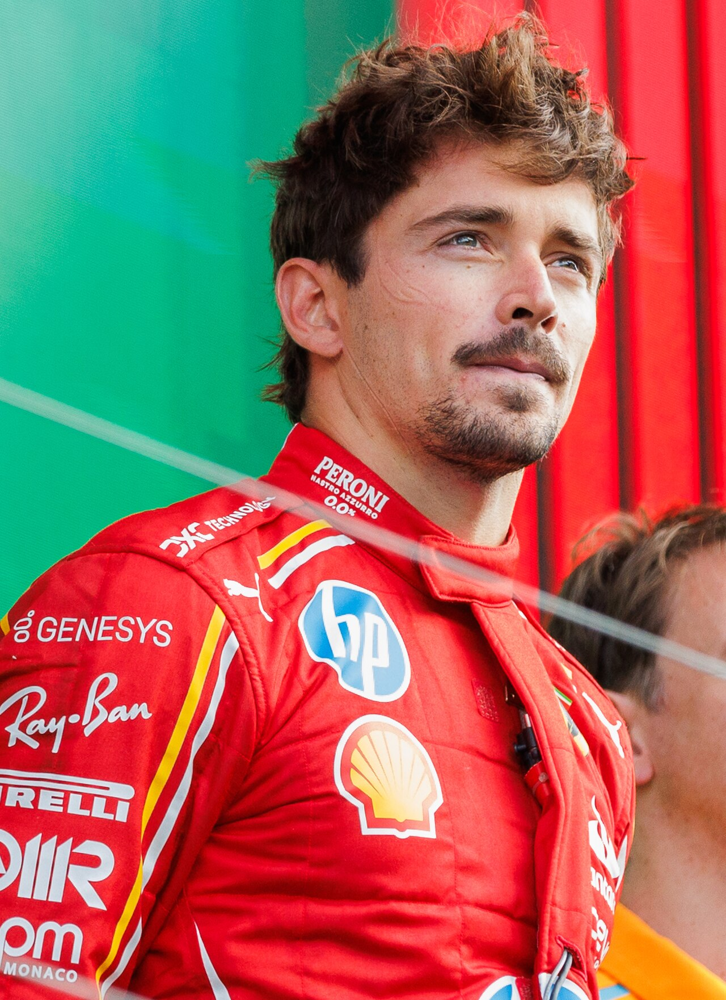

Charles Leclerc
Monaco · Ferrari · Car #16

7Race Wins
24+Pole Positions
2018F1 Debut
16Car Number
Career
Leclerc joined Ferrari in 2019 after winning races with Sauber. His qualifying speed quickly made him the team's lead driver.
In 2026 he partners Lewis Hamilton at Ferrari under Fred Vasseur, with the SF-25 successor targeting both championships in the new power unit era.
2026 Season
A home-race winner at Monaco and a fan favourite, Leclerc combines raw one-lap pace with deep Ferrari commitment.